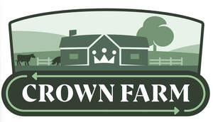

Trade Mark Journal No.2025/049 5 December 2025
UK00004296055 17 November 2025 (9,29,31,35,36,42,44)

International priority date claimed: 13 November 2025
(European Union Intellectual Property Office (EUIPO))
(019275774)
- Class 9
- Software; environmental monitoring software; computer software for the preparation of customized reports, in particular relating to carbon emission and carbon offsetting; software for gathering, managing, and analyzing data and calculating the carbon footprint of the agriculture and farming industry; software for displaying end-to-end CO2 emissions; software for collecting, processing, calculating, managing, providing and optimizing information regarding carbon emission and carbon offsetting in relation to the agriculture and farming industry.
- Class 29
- Meat, fish, poultry and game, including fresh, frozen and preserved products made from pork, beef, fish, poultry and game; sausages; charcuterie; bacon; gut for making sausages; meat extracts; edible oils and fats; prepared dishes consisting principally of meat, fish, poultry, game, eggs and vegetables; soups food made from meat; meat jellies.
- Class 31
- Live animals.
- Class 35
- Business management assistance; business administration; business analysis; business advise and consulting services in the agriculture and farming field; business project management services; provision of information relating to business operations in relation to the agriculture and farming industry; business advice and consulting services relating to carbon emission reductions in the agriculture and farming industry; advertising, marketing and promotional services, including consultancy and assistance; advertising and marketing services for promoting carbon emission reduction in the agriculture and farming industry; data processing; compilation of data; data retrieval services; consultancy relating to data processing; statistical analysis and reporting; preparing business reports; provision of commercial business information by means of a computer database; compilation, systematization, updating and maintenance of data in computer databases; loyalty, incentive and bonus program services; organization and management of business incentive and loyalty schemes; organization, operation and supervision of sales and promotional incentive schemes; advertising services to promote public awareness of environmental issues and initiatives; collection of commercial information related to business initiatives to promote the sustainability of products and services, with the aim to preserve the environment; arranging of trading transactions and commercial contracts; arranging of contractual [trade]services with third parties; arranging of contracts, for others, for the providing of services.
- Class 36
- Financial services; financial analysis; preparation of financial reports; providing project grants for environmental projects.
- Class 42
- Scientific and technological services and research and design relating thereto; industrial analysis and research; agricultural research services; research in the field of environmental conservation; research within agriculture and farming; testing, authentication and quality control; preparation of technical reports; carbon emission measuring and analysis; software as a service [SaaS]; providing temporary use of non-downloadable computer software for tracking, collecting and processing data and documents over computer networks, intranets and the internet; hosting an interactive website featuring technology that enables users to enter, access, track, monitor, process and generate information and reports related to carbon emission in the agriculture and farming industry; providing technological information about environmentally-conscious and green innovations; environmental testing; environmental consultancy services; environmental monitoring services; environmental testing and inspection services; compilation of environmental information; advisory services relating to environmental pollution; compilation of information relating to environmental conditions; provision of information, advice and consultancy in relation to carbon offsetting.
- Class 44
- Farming services; agriculture services; consultancy services related to farming and agriculture; agricultural services relating to environmental conservation; provision of advice and information relating to all the aforementioned services.
Danish Crown A/S
Representative: Barker Brettell LLP